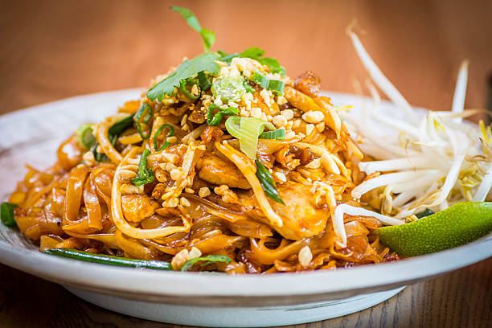

Lasagna

Description
This is Pad Thai. It's saucy, savoury rice noodles with veggies, peanuts, and proteins
Ingredients
- 1 pound rice noodles
- 1/4 cup fish sauce
- 1/4 cup rice vinegar
- 1/4 cup brown sugar
- 1/4 cup soy sauce
- 1/4 cup tamarind paste
- 1/4 cup vegetable oil
- 1/2 pound chicken, tofu, or shrimp
- 4 cloves garlic, minced
- 1/2 cup green onions, chopped
- 2 eggs
- 1 cup bean sprouts
- 1/2 cup peanuts, chopped
- 1/4 cup cilantro, chopped
- 1 lime, cut into wedges
Directions
- Soak rice noodles in cold water for 30 minutes.
- Combine fish sauce, rice vinegar, brown sugar, soy sauce, and tamarind paste in a bowl.
- Heat oil in a wok or large skillet over medium heat.
- Add chicken, tofu, or shrimp and cook until browned.
- Add garlic and green onions and cook for 1 minute.
- Push ingredients to one side of the wok and crack eggs into the other side.
- Scramble eggs and mix with other ingredients.
- Add noodles and sauce to the wok and toss to combine.
- Add bean sprouts and peanuts and toss to combine.
- Top with cilantro and serve with lime wedges.
Home